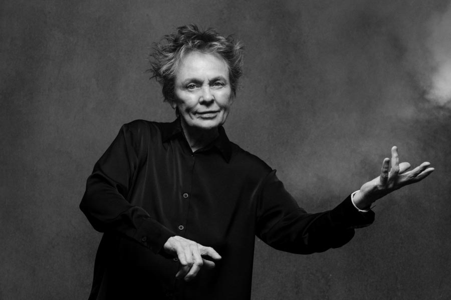
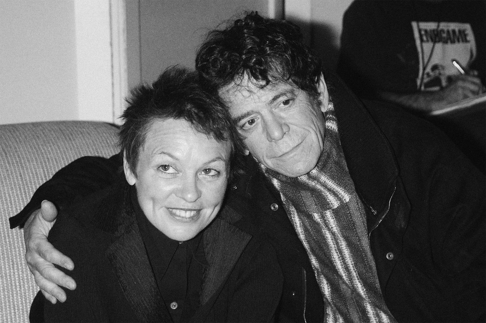

“El lenguaje es un virus que viene del espacio exterior.” — Laurie Anderson
Una voz singular en el arte contemporáneo
Laurie Anderson es una artista multidisciplinaria cuya obra abarca performance, música, cine y arte multimedia. Su práctica se caracteriza por la exploración del lenguaje, la tecnología y la narración como herramientas para construir experiencias artísticas complejas. A lo largo de su carrera, ha desarrollado un estilo propio que combina lo experimental con lo accesible. Su trabajo se distingue por el uso de la voz como elemento central. A través de relatos, textos y composiciones sonoras, crea piezas que invitan a reflexionar sobre la comunicación, la memoria y la percepción. La tecnología aparece como un medio para expandir estas posibilidades expresivas. Además, su enfoque integra elementos visuales, musicales y performáticos, generando obras que no se limitan a un único formato. Esta hibridez la posiciona como una figura clave dentro del arte contemporáneo.
¿Sabías esto de Laurie?
Oprime el botón de abajo para descubrir datos curiosos sobre la artista.
Trayectoria y proyección internacional
Nacida en Estados Unidos, Laurie Anderson comenzó su carrera en el circuito del arte experimental y la performance en la década de 1970. Su reconocimiento se amplió cuando logró llevar propuestas conceptuales a públicos más amplios, manteniendo una fuerte identidad artística. Uno de sus trabajos más conocidos es O Superman, una pieza que combina música electrónica y narrativa, y que alcanzó difusión internacional. Este tipo de obras evidencian su capacidad para integrar lo experimental con formatos más populares. A lo largo de su trayectoria, ha presentado sus obras en museos, teatros y festivales de todo el mundo. Su producción ha influido en múltiples disciplinas y continúa siendo una referencia en el cruce entre arte, tecnología y narración.
